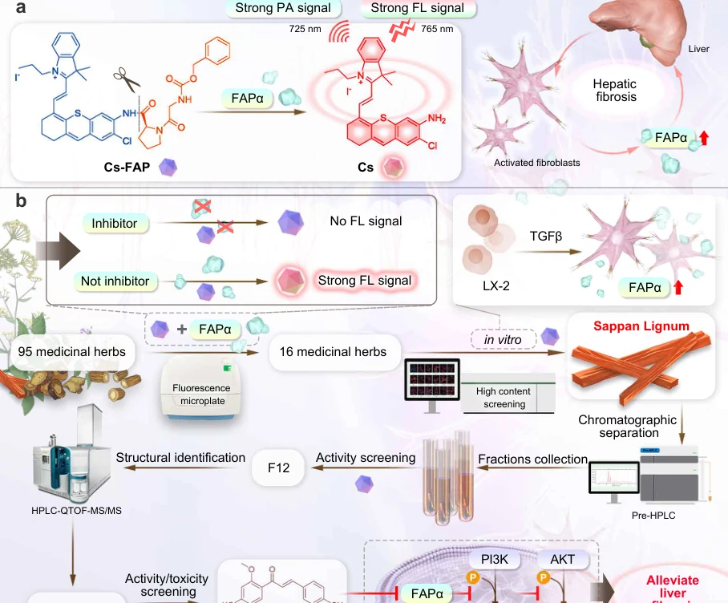
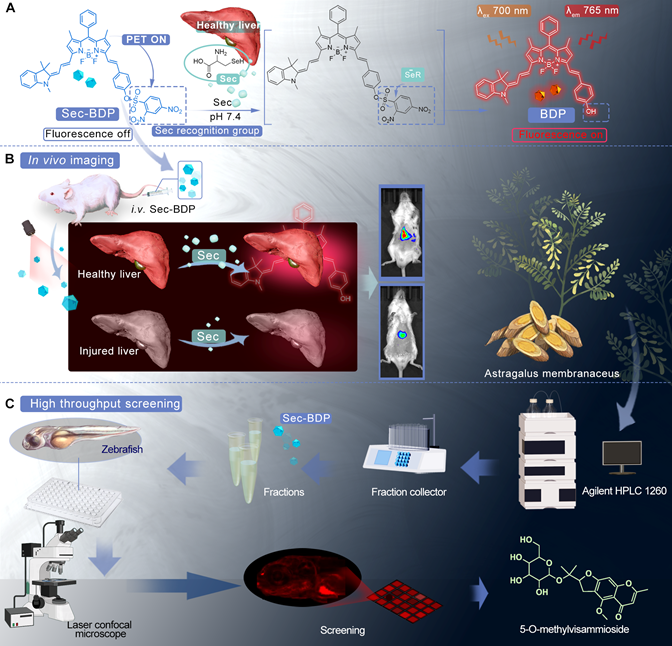
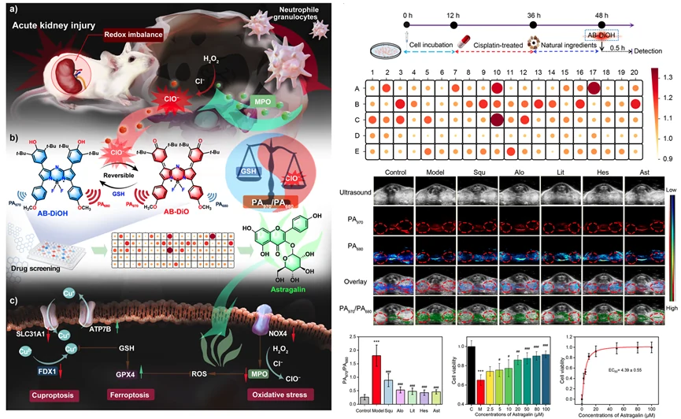

LAB NEWS
新闻动态
记录实验室的研究进展、论文发表、学术活动与人才培养。

分子影像引导天然 FAPα 抑制剂发现成果发表于 Nature Communications
团队通过分子影像引导筛选，从 95 种药用植物中发现天然 FAPα 抑制剂苏木查尔酮，为肝纤维化成像与药物发现提供新路径。
查看图文详情 →定制化光声纳米探针驱动肾保护药物发现成果发表于 Advanced Functional Materials
团队利用可逆响应氧化还原失衡的 TB@MP 光声纳米探针，开展肾缺血再灌注损伤识别与天然肾保护活性成分筛选。
查看图文详情 →
硒代半胱氨酸激活型近红外探针筛选中药抗炎成分成果发表于 Analytical Chemistry
团队构建硒代半胱氨酸激活型近红外荧光探针，用于中药抗炎活性成分的可视化筛选与评价。
查看图文详情 →
定制化光声探针驱动急性肾损伤药物发现成果发表于 Advanced Materials
团队将光声成像探针用于急性肾损伤的精准识别与天然活性物质筛选，建立“成像评价—药物发现—机制验证”的研究路径。
查看图文详情 →
黏度响应型分子探针发现肾纤维化天然干预物成果发表于 Analytical Chemistry
团队利用黏度响应型分子探针识别肾纤维化病理变化，并用于具有改善潜力的天然产物筛选与评价。
查看图文详情 →
照亮肾损伤羟基自由基并高通量筛选天然保护剂成果发表于 Advanced Science
团队构建荧光/光声双模探针，照亮肾损伤中的羟基自由基变化，并开展天然肾保护剂高通量筛选。
查看图文详情 →